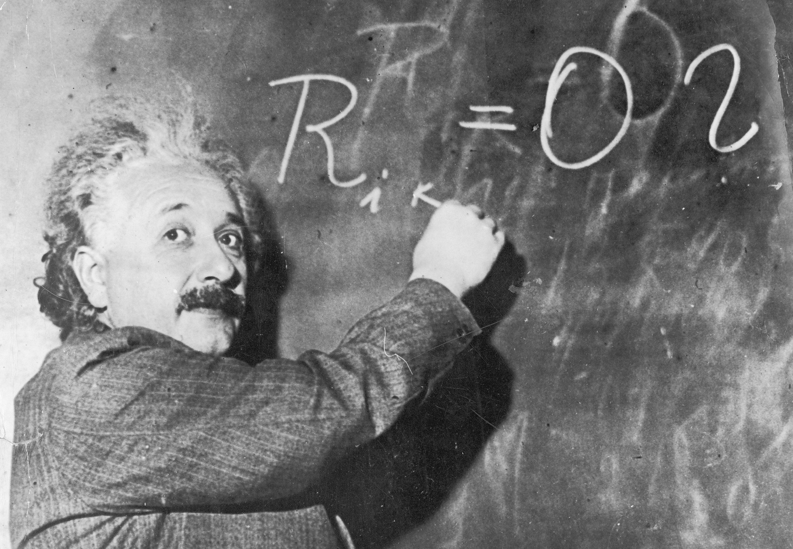

This is a picture of Albert Einstein
Tribute information etc
Further information about The Nobel Prize in Physics 1921 - Albert Einstein BiographicalThis is a tribute page about Albert Einstein
- 1879: Albert Einstein was born on March 14 in Ulm, in the Kingdom of Württemberg in the German Empire.
- 1895-1900: Einstein studied physics and mathematics at the Polytechnic Institute in Zurich, Switzerland.
- 1905: This year, often referred to as Einstein's "miracle year," he published four groundbreaking papers in the scientific journal Annalen der Physik. These papers introduced his theory of relativity, explained the photoelectric effect (for which he later received the Nobel Prize), and explored Brownian motion and the equivalence of mass and energy (E=mc²).
- 1915-1916: Einstein completed his general theory of relativity, which extended his previous special theory of relativity and provided a new understanding of gravity. This theory predicted the bending of light around massive objects, later confirmed by the 1919 solar eclipse expedition led by Arthur Eddington.
- 1921: Einstein received the Nobel Prize in Physics for his explanation of the photoelectric effect, which contributed to the development of quantum mechanics.
- 1933: Due to the rise of the Nazi party, Einstein, who was of Jewish heritage, left Germany and emigrated to the United States. He accepted a position at the Institute for Advanced Study in Princeton, New Jersey.
- 1939: Einstein signed a letter to President Franklin D. Roosevelt, warning of the potential development of atomic weapons by Nazi Germany and urging the United States to initiate its own research. This letter eventually led to the establishment of the Manhattan Project.
- 1952: Einstein was offered the presidency of the newly formed state of Israel, but he declined the position.
- 1955: Albert Einstein passed away on April 18 at the age of 76 in Princeton, New Jersey.